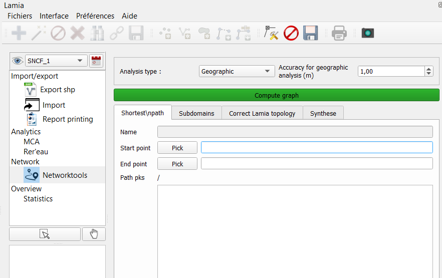

Utilisation du module de Topologie¶
Ce module permet de gérer la correction et l’analyse de la topologie noeuds/tronçons renseignée dans Lamia.
On y accède via la barre de menu Lamia/ Interface / post-traitement – onglet “Networktools”
Le formulaire du haut permet de choisir le mode d’analyse topologique :
Analyse géographique (basée sur la proximité des extrémités des tronçons avec les noeuds)
On peut choisir une distance de tolérance pour considérer qu’une extrémité de tronçon est bien raccordé à un noeuds s’il ce dernier est à une distance inférieure de la distance choisie.
Analyse topologique (basé sur les liens topologiques rentrés dans Lamia)
Toujours commencer par activer l’analyse topologique en cliquant sur le bouton « Compute graph »
Analyse du chemin le plus court¶
TODO
Analyse des sous domaines¶
Cliquer sur le bouton « Find subdomains ». Une liste apparaît dans le tableau en dessous.
En utilisant le bouton de selection (la flèche au milieu à gauche de l’interface Lamia), on peut sélectionner les sous-dommaines voulus.
Correction topologique¶
On peut utiliser ce module (en mode « Analyse géographique ») pour corriger la topologie rentrée dans Lamia.
L’appui sur le bouton « Go » permet :
de relier correctement topologiquement les tronçons et les noeuds dans la base de donnée Lamia. Les extrémités de tronçon seront reliées
au noeud le plus proche à condition qu’il soit à une distance inférieure à la distance spécifiée en haut de la fenêtre.
De corriger la géométrie des tronçons en adaptant leur extrémitées aux noeuds
Les options sont :
« Correct only missing edges » : ceci corrige seulement les tronçons non liés topologiquement dans Lamia. Le décocher pour faire un process sur l’ensemble des troçons, même ceux déjà liés topologiquement.
« Add missing nodes » : rajoute les noeuds manquant d’un point de vue topologique.

{kind=link}